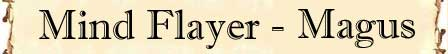

|
|
Ambiente/Habitat | Sotterranei |
| Frequenza | Rare | |
| Organizzazione | Comunità | |
| Periodo di Attività | Any | |
| Dieta | Carnivore | |
| Intelligenza | Genius (17) | |
| Punti Combattimento | 25 Punti Combattimento | |
| Tesoro | Vedi Sotto | |
| Allineamento Dominante | Lawful Evil | |
| Numero di Apparizione | 1d10: (1-4) 1 (5-7) 2 (8-9) 3 (10) 4 | |
| Classe Armatura | 5 [10 base, 4 corazza, 1 destrezza] | |
| Movimento | 8 esagoni | |
| Dadi Vita | 8 (+5 punti ferita) | |
| Thac0 | 12 | |
| Numero di Attacchi | Tentacolo * 4 | |
| Danni | 1d4+1 (Taglio) * 4 | |
| Poteri Offensivi | Istinto Predatorio; Psychic Blast; Mind Stun; Brain Extraction; |
|
| Poteri Difensivi | Immunità agli Effetti
Mentali; Robustezza Superiore (+5 punti ferita); |
|
| Poteri Generici | Telepatia; | |
| Vulnerabilità | Nessuna; | |
| Resistenza alla Magia | 50% | |
| Sensi | Vista Comune, Sensi Superiori, Infravisione (18 metri) | |
| Dimensioni | Medium (2 m. alto) | |
| Morale | Champion (15) | |
| Valore in Punti Esperienza | 4045 |
|
TIRI SALVEZZA DELLA CREATURA |
|||||||
| CORAGGIO | ENERGIA VITALE | MAGIA | MALATTIA | MENTE | RIFLESSI | ROBUSTEZZA | VELENO |
| 0 | 0 | +5% | 0 | (immunità) | 0 | 0 | 0 |
| 42 | 48 | 52 | 41 | 55 | 47 | 46 | 43 |

Descrizione
Questo strano essere umanoide è alto all'incirca due metri. La sua pelle è gommosa e bluastra, lucida e viscosa. La testa della creatura assomiglia a una piovra con quattro lunghi e robusti tentacoli, ed è resa ancora più orrenda da un paio di occhi bianchi e gonfi. La bocca, posizionata al centro dei tentacoli ed assomigliante alla bocca di una lampreda, lascia continuamente gocciolare una bava oleosa che si sparge sulle lunghe protuberanze tentacolari in continuo movimento. Un Mind Flayer ha all'incirca la stessa altezza e lo stesso peso di un umano. Queste creature sono soliti indossare tuniche dai colori scuri che terminano in alti collari e sono adornate da simboli di morte e disperazione.
Combat
I Mind Flayer preferiscono combattere a distanza, utilizzando le loro capacità psioniche, in particolare il loro flagello mentale. Se costretto in una mischia, un Mind Flayer sferza i suoi nemici con i tentacoli posizionati attorno alla sua bocca. I Mind Flayer combattono in modo estremamente intelligente accanendosi su coloro sono allo stesso tempo più lesivi ma vulnerabili (come spesso accade per gli utenti di magia).
ISTINTO PREDATORIO (Moderate Special Ability): La creatura possiede un forte istinto predatorio, per tale motivo costei riceve un bonus costante di +1 alla Thac0 con i suoi attacchi.
PSYCHIC BLAST
(Powerful Special Ability):
Questo attacco consiste in
un'aggressione psichica alla mente della sua vittima. Questa forma di attacco
può essere utilizzata solo nei confronti delle creature normalmente soggette
agli incantesimi mentali. Questo attacco ha un
fattore iniziativa pari a +3
e può essere effettuato (anche dopo un mezzo movimento) solo nei confronti di una
creatura che si trovi entro 30 metri. Quando il mostro
effettua questo attacco lo stesso e la vittima devono effettuare una prova contrapposta di intelligenza.
Se la prova è vinta dalla vittima l'attacco fallisce. Qualora, invece, la prova
contrapposta è vinta dalla creatura mostruosa l'aggressione avrà avuto successo e
la vittima subirà 2d6 danni mentali.
Un fallimento critico della prova della vittima od un successo critico del
mostro daranno luogo ad un successo automatico dell'attacco, un fallimento
critico della prova del mostro od un successo critico della vittima daranno
luogo ad un fallimento automatico dell'attacco. In caso di risultato critico
contrapposto si verificherà il fallimento dell'attacco.
Questa forma di attacco non può
avere in alcun caso effetti critici.
MIND STUN (Powerful Special
Ability):
Questo attacco consiste nel
lanciare un'onda telepatica di disturbo mentale. Questa forma di attacco può
essere utilizzata validamente solo nei confronti delle creature normalmente
soggette agli incantesimi mentali. Questo attacco ha un
fattore iniziativa pari ad un
intero round ma non richiede il
mantenimento della concentrazione. Quando la creatura effettua questa forma di
attacco tutte le creature che si trovano
entro 15 metri
di distanza dovranno superare un
tiro salvezza su mente
senza l'applicazione di alcun modificatore.
Le creature che falliscono il
tiro salvezza riceveranno
3 danni mentali e
resteranno stordite (stunned) nei
successivi 1d3 round.
Questa forma di attacco
non può avere in alcun caso effetti critici.
BRAIN EXTRACTION (Superior Special Ability): Quando durante un round di combattimento questa creatura è riuscita a colpire con tutti e quattro i suoi tentacoli il medesimo essere umano, umanoide o semi-umano di taglia massima media, la stessa può provare risucchiarne parte della massa celebrale. Questa forma di attacco non funziona su creature prive di normale cervello organico. La vittima dovrà, quindi, superare un tiro salvezza su robustezza con penalità di -10% (al tiro salvezza sarà anche applicata il modificatore dovuto per la differenza di livello tra mostro e vittima). Se il tiro salvezza fallisce il mostro avrà estratto parte del cervello, la vittima subirà la perdita immediata e permanente di un ammontare di punti ferita pari al 5% dei suoi punti ferita massimi (arrotondati per difetto) nonché 1d3 punti di intelligenza ed acquisterà immediatamente 1d3 punti follia. Questa lesione potrà essere sanata solo con una potente magia di rigenerazione. Ogni singola lesione corrisponde al recupero un arto perduto. Una creatura che arrivi ad un punteggio di intelligenza pari a 0 muore istantaneamente.
IMMUNITA' AGLI EFFETTI MENTALI (Typical Special Ability): Questa creatura è del tutto immune a tutte le forme di aggressione mentale nonché a tutti gli incantesimi mentali od effetti magici in grado di incidere sulla propria mente.
TELEPATIA (Lesser Special Ability): La creatura è in grado di comunicare telepaticamente con qualsiasi essere intelligente si trovi entro 30 metri di distanza.
MODERATE COMBO - MIND STUN e IMMUNITA' AGLI EFFETTI MENTALI - Le due abilità costituiscono una combo in quanto la seconda impedisce che questa creatura subisca gli effetti del primo potere utilizzato da un altro essere dello stesso tipo. In considerazione della circostanza che questa combo può essere utilizzata validamente solo in presenza di due creature la stessa può essere considerata moderata.
LESSER COMBO
-
ISTINTO PREDATORIO e
BRAIN
EXTRACTION - Le due abilità costituiscono una combo
in quando la prima incide sull'utilizzabilità della seconda. In
considerazione della modesta incidenza questa combo può essere considerata minore.
LESSER COMBO
-
MIND STUN
e
BRAIN
EXTRACTION - Le due abilità costituiscono una combo
in quando la prima potrebbe incide sull'utilizzabilità della seconda rendendo un
bersaglio più facile da colpire. In
considerazione della sua necessaria applicazione circostanziale la stessa può essere considerata minore.
Habitat/Society
I Mind Flayer
(chiamati anche Illithid) odiano la luce del sole e, nonostante non abbiano
sostanziali penalità alla sua esposizione, la evitano per quanto possibile.
I Mind Flayer sono così subdoli, diabolici e potenti da essere temuti da tutte
le creature dell'oscurità. Piegano gli altri al proprio volere e frantumano la
mente dei nemici. Oltre ad essere estremamente intelligenti, del tutto malvagi
e terribilmente sadici, i Mind Flayer hanno un comportamento molto egoistico. Se
un incontro si risolve a sfavore della creatura, questa scapperà senza pensarci
due volte, disinteressandosi del destino dei suoi compagni o servitori.
I Mind Flayer vivono in piccole comunità sotterranee composte comunemente di una
decina di abitanti. Le rare comunità di dimensioni maggiori possono raggiungere
le trenta unità. Comunemente ogni abitante possiede da uno a sei schiavi o
servitori. Gli schiavi sono sottoposti ad un continuo lavaggio del cervello ed
ad un regime di terrore. Per tale motivo costoro obbediscono ai loro padroni
senza discutere. Il centro di una comunità è il suo
Cervello Antico,
una pozza di liquido cerebrale che contiene i cervelli appartenuti ai Mind
Flayer morti. Anche se gareggiano continuamente per il potere, i Mind Flayer
sono per lo più disposti a collaborare tra loro. In alcuni casi, per
fronteggiare pericoli comuni, per custodire terribili segreti o per risolvere
complicate questioni, si forma un gruppo di queste creature, conosciuto come
Inquisizione. Questo gruppo è composto normalmente da cinque membri guidati dal
più potente di loro che acquista il rango di Mente dell'Inquisizione.
Ecology
I Mind Flayer vivono circa 125 anni. Si tratta di creature anfibie che trascorrono i primi 10 anni di vita sguazzando nella pozza del Cervello Antico dove muoiono o si evolvono in Mind Flayer adulti. I Mind Flayer sono creature ermafrodite.
Mystical Resource Sourge
(Tentacoli) Quantità: 4, Presenza 25%
- Scuola di Magia :
Charm
- Qualità
della Risorsa: Common.
Mystical Resource Sourge
(Massa Celebrale) Quantità: 1, Presenza 50% - Scuola di Magia:
Charm
- Qualità della Risorsa: Uncommon.
| Tipologia di Tesoro | INDIVIDUALE | Quantità |
| Gemme |
20% |
2d3 gemme |
| Oggetti Preziosi | 15% | 1d12: (1-6) 1 oggetto (7-9) 2 oggetti (10-12) 3 oggetti |
| Oggetti Comuni | 40% | 1d2 oggetti comuni |
| Armi | 15% | 1 arma |
| Armature | 10% | 1 corazza |
| Oggetto Magico | 12% | 1 oggetto magico 1d10: (1-7) common (8-10) rare |
| Liquido Magico | 25% | 1 liquido magico |
| Monete di platino | 33% | 2d20 monete di platino |
| Monete d'oro | 50% | 1d20 * 5 + 1d10 monete d'oro |

|
|
Climate/Terrain | Sotterranei |
| Frequency | Rare | |
| Organization | Comunità | |
| Activity Cycle | Any | |
| Diet | Carnivore | |
| Intelligence | Genius (17) (26 Punti Combattimento) | |
| Treasure | Vedi Sotto | |
| Alignment | Lawful Evil | |
| No. Appearing | 1 | |
| Armor Class | 5 | |
| Movement | 12 | |
| Hit Dice | 9+5 | |
| Thac0 | 11 | |
| No. of Attacks | tentacolo * 4 | |
| Damage / Attacks | 1d4+1 (taglio) * 4 | |
| Special Attacks | Istinto Predatorio; Psychic Blast; Mind Stun; Brain Extraction; Capacità Magiche; |
|
| Special Defenses | Immunità agli Effetti Mentali; | |
| Special Weakness | Nessuna; | |
| Other Power | Telepatia; | |
| Magic Resistance | 50% | |
| Senses | Vista Comune, Sensi Superiori, Infravisione (18 metri) | |
| Size | Medium (2 m. alto) | |
| Morale | Champion (15) | |
| XP value | 5960 |
Alcuni Mind Flayer sono naturalmente avvezzi all'uso della magia e sono in grado di padroneggiare le arti magiche. Anche senza aver studiato le arti magiche intraprendendo una carriera di utenti di magia i Mind Flayer sono in grado, infatti, di utilizzare alcune magie che si tramandano di generazione in generazione. Si tratta di alcune magie selezionate della scuola Alteration e di alcune magie della scuola Necromancy. Questi Mind Flayer sono chiamati Magus e sono considerati superiori ai comuni Mind Flayer.
CAPACITA' MAGICHE (Typical Ability): Il Mind Flayer - Magus può lanciare alcune volte al giorno i seguenti incantesimi, tutti gli incantesimi si considerano lanciati al 9° livello di lancio:
I LIVELLO DI POTERE
Chill the Blood (Alteration) - 2 volte al giorno
Range: 21
metri
Components: V,S
Duration: 1 round per level (max 7 rounds)
Casting Time: 2
Area of Effect: One creature
Saving Throw: Negates
Attraverso questo incantesimo il mago raffredda il sangue di una creatura con l'effetto di intorpidirla per tutta la durata dell'incantesimo. La vittima ha diritto ad un tiro salvezza contro incantesimi per evitare gli effetti della magia. Se la creatura fallisce il tiro salvezza la stessa proverà un'innaturale sensazione di freddo all'interno del proprio corpo e sarà presa da un generale senso di torpore subendo una penalità di +2 a tutte le iniziative e di -1 ai tiri per colpire (avrà inoltre il 10% di possibilità di fallire nel lancio degli incantesimi con componenti somatici). Creature non morte, costruiti, creature originarie di diversi piani dimensionali, creature vegetali e comunque tutte le creature in qualsiasi modo prive di sangue sono immuni agli effetti di questa magia. Parimenti immuni agli effetti di questo incantesimo sono tutte le creature immuni ai danni da freddo. Le creature che hanno una qualsiasi resistenza ai danni da freddo, invece, ottengono un bonus di +4 al tiro salvezza contro questo incantesimo.
Painful Wounds (Necromancy) - 2 volte al giorno
Range: 9
metri
Components: V, S, M
Duration: 3 rounds
Casting Time: 3
Area of
Effect: One creature
Saving Throw: Special
Questo incantesimo può essere lanciato validamente solo su creature "ferite" ossia su creature che abbiano subito almeno il 26% dei danni oppure che abbiano subito gli effetti della magia necromantica Bleeding Wounds. Quando la magia è lanciata la vittima potrà superare un tiro salvezza contro raggio della morte per evitarne gli effetti. Se il tiro salvezza è fallito le ferite della vittima diventeranno incredibilmente dolorose e la stessa non potrà fare altro che soffire e lamentarsi per tutta la durata della magia considerandosi impedita. La magia termina una volta trascorsi 1 round ogni due livello di lancio della stessa (1 round al 1° e 3° livello, 2 rounds al 4° e 6° livello, e così via) fino ad un massimo di 4 rounds al 10° livello di lancio. Il componente materiale di questa magia è una manciata di polvere di quarzo dal peso di 1/10 di libbra e dal costo di 12 monete d'oro che si consuma al lancio dell'incantesimo.
Bleeding Touch (Necromancy) - 2 volte al giorno
Range: 9
metri
Components: V, S, M
Duration: Instantaneous
Casting Time: 2
Area of Effect: One creature
Saving Throw: Negates
Questa magia fa apparire sulla vittima profondi e sanguinanti tagli che si aprono sulla superficie della loro carne. Questa magia, infatti, può essere lanciata unicamente su creature il cui fisico è composto di carne (non ad esempio su costruiti, elementali, scheletri ecc...). La vittima può evitare di subire gli effetti di questo incantesimo superando un tiro salvezza contro raggio della morte. Se il tiro salvezza è fallito la vittima subirà 1d3 danni da lacerazione ogni due livelli di lancio della magia (1d3 al primo e secondo livello, 2d3 al terzo e quarto livello, e così via...) fino ad un massimo di 5d3 danni al 9° livello di lancio. Inoltre, per il dolore subito, la vittima risulterà impedita (hindered) per tutto il resto del round in corso (le creature immuni al dolore e quelle che, possedendo la competenza pain tollerance, riescono in una prova nella stessa non subiranno gli effetti secondari dell'incantesimo.
II LIVELLO DI POTERE
Thick Skin (Alteration) - 1 volta al giorno
Range: 9
metri
Components: V, S, M
Duration: 1 turn
Casting Time: 3
Area of Effect: One creature
Saving Throw: None
Quando il mago lancia questa magia il corpo del beneficiario diviene così compatto che costui ridurrà, per tutta la durata dell'incantesimo, di 2 danni ogni singolo attacco fisico (botta, taglio, punta) da lui subito (indipendentemente dal numero di dadi di danno tirati con l'attacco), questo beneficio non si estende ai danni diversi da quelli fisici (come fuoco e come i danni di molte magie i cui effetti non possono essere ricondotti a quelli di danni fisici). Deve osservarsi, inoltre, che questa resistenza non difende la creatura dagli effetti degli attacchi diversi dai danni fisici anche qualora il danno provocato da tali attacchi non sia sufficiente a superare la resistenza posseduta. Qualora, ad esempio, la creatura sia attaccata da un ragno velenoso il cui morso provochi 1 punto danno, la stessa non perderà il punto ferita causato dal morso ma sarà regolarmente soggetta al veleno dell'aracnide. Il componente materiale è una striscia di cuoio con rune d'argento incise sopra dal costo di 10 monete d'oro e dal peso di 0,2 libbre che si consuma al lancio della magia.
Bleeding Wounds (Necromancy) - 2 volte al giorno
Range: 21 metri
Components: V, S, M
Duration: 1 round
per level
Casting Time: 4
Area of Effect: One
creature
Saving Throw:
Negates
Questo incantesimo può essere lanciato solo su creature che risultino già ferite.
Questa magia, inoltre, può essere utilizzata solo su creature che posseggono un
corpo dotato di sangue, non funzionando su esseri quali non morti, elementali,
creature vegetali. Gli esseri dotati di una rigenerazione almeno pari ad 1 punto
ferita al round, infine, sono immuni agli effetti di questa magia. La vittima
dell'incantesimo ha diritto a superare un tiro salvezza contro raggio della
morte. Se il tiro salvezza fallisce, le ferite della vittima inizieranno a
sanguinare copiosamente e la stessa perderà alla fine di ogni round di durata
della magia 1d2 punti ferita per il dissanguamento. La magia dura 1 round per
livello di lancio fino ad un massimo di 10 rounds al 10° livello di lancio. Il
componente materiale di questa magia è una bende sterile imbevuta di sangue
umano dal valore di 2 monete d'oro e dal peso di 1/10 di libbra che si consuma
al lancio dell'incantesimo.
Dark Energy Field (Necromancy) - 1 volta al giorno
Range: 0
Components: V, S, M
Duration: 1 hour + 1 turn
per level
Casting Time: 1 round
Area of Effect: The Caster
Saving Throw:
One Creature
Questo incantesimo è stato inventato da un giovane necromante nella città di Pergar presso i grandi laboratori del Circolo dei Summoner e Conjurer per sopperire alla mancanza di incantesimi difensivi necromantici. Per mezzo di questa magia il mago si circonda di un aura di energia negativa per farsi proteggere. L’aura si nota dall’esterno come una serie di sottili strati di nubi nere che girano vorticosamente intorno al necromante. Tutte le creature intelligenti la cui esistenza si basa sull’energia positiva si rendono conto che entrare a contatto con quell’aura può essere pericoloso. Appena una creatura attacca il mago in corpo a corpo e lo tocca l’aura negativa si scaglia contro costui e viene da lui assorbita provocandogli forti spasmi e danni da esposizione ad energia negativa pari a 3 + 3 ogni 2 livelli di lancio oltre al primo (3 danni al 1° e 2° livello, 6 danni al 3° e 4° livello, 9 danni al 5° e 6° livello, e così via) fino ad un massimo di 15 danni al 9° livello di lancio. Il caster non può in nessun modo volontariamente attaccare una creatura per scaricargli contro l’aura . Cumulare questo spell con altri spell difensivi potrebbe essere pericoloso . Questo spell non ha effetto sulle creature non viventi nel primo piano materiale positivo (come golems , elementali) e cura quelle la cui essenza si basa sul piano negativo.
III LIVELLO DI POTERE
Blink (Alteration) - 1 volta al giorno
Range:
0
Components: V, S
Duration: 1 round per level
Casting Time: 3
Area of Effect: The Caster
Saving Throw: None
Questo incantesimo si sostanzia in una forma di trasporto magico difensivo, casuale, ad intermittenza ed a breve distanza. A partire dal round successivo a quello di lancio dell'incantesimo, infatti, il mago sarà automaticamente teletrasportato in una posizione casuale diversa ad ogni round di durata della magia. Si noti che una volta iniziata la magia non potrà essere interrotta dal mago. In particolare, ogni round, il mago dovrà tirare 2d6. Il risultato di questo tiro determinerà il fattore iniziativa all'interno del round in cui si verificherà il teletrasporto (ossia il momento dal quale il mago si troverà nella nuova diversa posizione). Se, ad esempio, il mago tira 3 e 4 per un totale di 7 ciò vorrà dire che da fattore 1 a fattore 6 del round costui si troverà nella posizione originaria mentre dal fattore 7 si troverà istantaneamente nella nuova posizione. Il mago sarà teletrasportato in una posizione libera selezionata casualmente tra tutte le posizioni che si trovano entro 6 metri di distanza dallo stesso. Per determinare la posizione di arrivo si tiri 1d20 e si consulti il relativo scatter. Con un risultato di 19 o 20, sul primo tiro di dado, il mago potrà determinare a sua scelta la posizione di arrivo. Qualora la prima posizione di arrivo selezionata casualmente risulta occupata il mago dovrà rinnovare il tiro fino a che non risulti una posizione libera (ignorando però, in questo caso, ogni risultato pari a 19 o 20). Se non vi sono posizioni libere nel raggio del teletrasporto la magia non si attiverà. Qualora il mago decide di effettuare una qualsiasi azione costui dovrà tirare sull'iniziativa un risultato inferiore a quello del teletrasporto. Il teletrasporto magico, infatti, è così stressante per il fisico del mago da impedire ogni sorta di azione complessa dopo il suo verificarsi. Dopo essersi teletrasportato, infatti, il mago potrà unicamente effettuare un'azione di mezzo movimento (sempre che non l'abbia effettuata nella fase del round precedente all'effetto di trasporto magico). Se il mago aveva iniziato il lancio di una magia od una qualsiasi altra azione la quale non risulti terminata al momento del teletrasporto tale azione si considererà fallita.

Necromantic Bolt
(Necromancy)
- 2 volte al giorno
Range: 3 metri per livello (max. 27 metri)
Components: V, S
Duration:
Instantaneous
Casting Time: 3
Area of Effect: One
creature
Saving Throw:
Negates
Quando il mago lancia questa magia una sfera fiammante di materia negativa dai riflessi bluastri e violacei si materializza tra le sue mani e di dirige verso il bersaglio designato colpendolo. Quando la sfera colpisce il bersaglio infligge danno alla sua essenza vitale. Per tale motivo la vittima deve superare un tiro salvezza contro incantesimi. Se il tiro salvezza ha successo il bersaglio resisterà al colpo altrimenti subirà 1d6 danni da irradiamento di energia negativa + 1d6 danni supplementari per ogni due livelli di lancio della magia oltre il primo (1d6 al 1° livello, 2d6 al 3° livello ...) fino ad un massimo di 5d6 danni al 9° livello di lancio della magia. La vittima inoltre sarà indebolita dall'energia negativa per 1 turno ricevendo una penalità di -1 al tiro per colpire, di -1 ai danni ed il 10% di fallire nel lancio delle magie. Questa magia non produce alcun effetto nei confronti di coloro privi di un corpo organico basato sull'energia positiva.
Mystical Resource Sourge
(Tentacoli) Quantità: 4, Presenza 30%
- Scuola di Magia :
Charm
- Qualità
della Risorsa: Common.
Mystical Resource Sourge
(Occhio Destro) Quantità: 1, Presenza 33% - Scuola di Magia:
Alteration
- Qualità della Risorsa: Uncommon.
Mystical Resource Sourge
(Occhio Sinistro) Quantità: 1, Presenza 33% - Scuola di Magia:
Necromancy
- Qualità della Risorsa:
Uncommon.
Mystical Resource Sourge
(Massa Celebrale) Quantità: 1, Presenza 55% - Scuola di Magia:
Charm
- Qualità della Risorsa: Uncommon.
| Tipologia di Tesoro | INDIVIDUALE | Quantità |
| Gemme |
25% |
2d3 gemme |
| Oggetti Preziosi | 20% | 1d12: (1-6) 1 oggetto (7-9) 2 oggetti (10-12) 3 oggetti |
| Oggetti Comuni | 40% | 1d2 oggetti comuni |
| Armi | 15% | 1 arma |
| Armature | 10% | 1 corazza |
| Oggetto Magico | 15% | 1 oggetto magico 1d10: (1-7) common (8-10) rare |
| Liquido Magico | 33% | 1 liquido magico |
| Pergamene | 25% | 1 pergamena dei maghi |
| Monete di platino | 33% | 3d20 monete di platino |
| Monete d'oro | 50% | 1d20 * 7 + 1d10 monete d'oro |